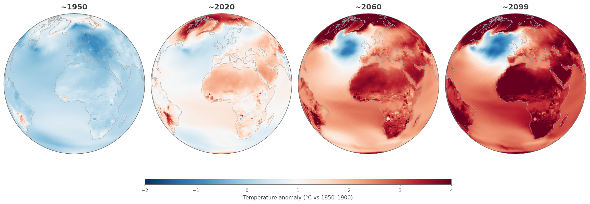

What You'll Learn

AI-Powered Workflows
Using AI coding assistants to build research pipelines, automate data processing, and accelerate scientific discovery.

Bayesian Modelling
Probabilistic frameworks for uncertainty quantification, hierarchical models, and inference techniques applied to geoscientific data.

Machine Learning
Supervised and unsupervised methods for climate data—from random forests and gradient boosting to deep learning for spatiotemporal patterns.

Climate Data Analysis
Timeseries analysis, spatial statistics, multi-model ensemble techniques, and working with large-scale observational and reanalysis datasets.
